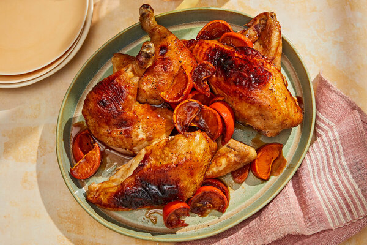

|  |
- 5 small tangerines or clementines
- ½ packed cup dark brown sugar
- ¼ cup soy sauce
- 1 ½ teaspoons rice vinegar or distilled white vinegar
- 1 teaspoon ground cayenne or other hot red ground chile
- 1 (4-pound) whole chicken
- Salt and black pepper
- 8 slices peeled fresh ginger
|